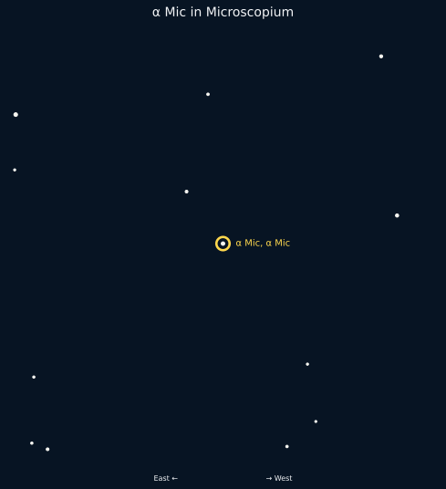

Why it is here: α Mic is a charted star in Mic selected by the Calendar as part of this week’s fixed-sky observing framework.
How to find it: Use its charted position in Mic and the surrounding figure stars to identify the field.
α Mic is a charted star in Mic selected by the Calendar as part of this week’s fixed-sky observing framework.
Why it is here: α Mic is a charted star in Mic selected by the Calendar as part of this week’s fixed-sky observing framework.
How to find it: Use its charted position in Mic and the surrounding figure stars to identify the field.
